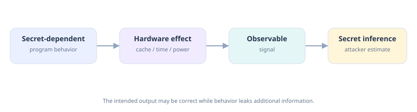
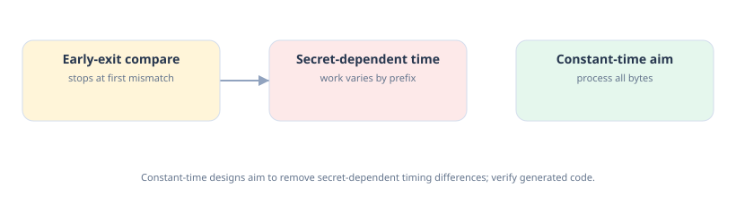
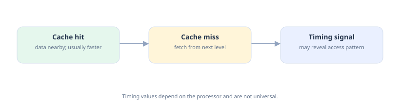
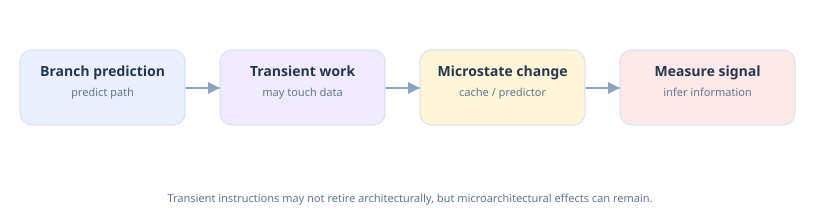
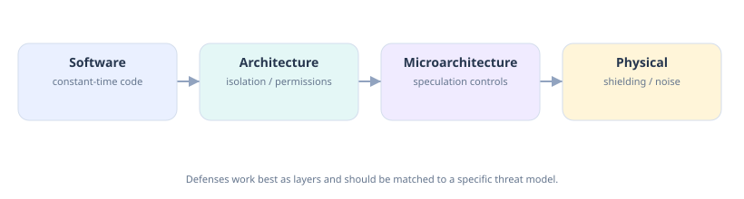

Side Channels & Hardware Security
Study Notes --- simple explanations, diagrams, examples, and revision questions
Core idea: A program can calculate the correct answer and still leak a secret through how the computer performs the calculation.
These notes follow the structure and terminology of the "Side Channels
& Hardware Security" slide deck you studied. Explanations are
intentionally simple, with examples and a RISC-V/FPGA connection near
the end. The diagrams in images/ are original conceptual diagrams;
they are not measurements from a real chip.
Contents
- Learning goals
- What is a side channel?
- Side channel vs covert channel
- Timing attacks: early exit
- Constant-time code
- Cache-timing attacks
- Three classic cache techniques
- Flush+Reload, conceptually
- Spectre, Meltdown, and transient execution
- Power analysis: SPA, DPA, CPA
- Fault injection
- Other shared-state channels and Rowhammer
- The defensive toolbox and its costs
- The big lesson
- Glossary
- Self-test with answers
- Connection to RISC-V and FPGA work
1. Learning goals
After studying these notes, you should be able to:
- Explain side channels and distinguish them from covert channels.
- Explain why an early-exit comparison can leak timing information.
- Describe the goal and limitations of constant-time code.
- Explain cache hits, misses, and the basic idea behind cache-timing attacks.
- Compare Flush+Reload, Prime+Probe, and Evict+Time.
- Explain transient execution and the basic ideas behind Spectre and Meltdown.
- Recognise power analysis, fault injection, branch-predictor/TLB/execution-port leakage, and Rowhammer.
- Name important defenses and explain their performance or implementation costs.
2. What is a side channel?
A side channel is an unintended observable signal that reveals information a program did not mean to expose. The attacker does not necessarily break the cryptographic algorithm; they observe the machine while it runs the algorithm.
Common signals include:
- Time: how long an operation takes.
- Power consumption: how much electrical power the chip uses.
- Electromagnetic (EM) radiation: signals emitted by electrical activity.
- Cache state: which data may be present in a processor cache.
- Other shared hardware state: for example, branch-predictor or TLB state.
Analogy: listening to a lock
A safe may be mathematically well designed, but tiny clicks while its mechanism moves could reveal clues. Similarly, software can keep a secret out of its output while the hardware's behavior gives away information.

Two questions to ask about every attack
- What signal depends on the secret? Timing, cache state, power, EM radiation, or something else?
- What can the attacker measure? Can they run code on the same machine, share a cache, or physically hold and measure the device?
A side channel does not automatically mean the attack succeeds. The attacker needs access to a measurable signal, and the signal must reveal enough information despite noise and other activity.
3. Side channel vs covert channel
Side channel Covert channel----------------------- ----------------------- ----------------------- Intent Unintended leakage Deliberate communication
Parties An unaware victim and Two cooperating or an observer/attacker colluding programs
Goal Infer a secret from the Send information victim's behavior through a path not intended for communication
Example Measuring encryption Two isolated programs timing to infer key deliberately encode and information decode bits using cache activity
"Deliberate" means done on purpose. "Sneak data past an isolation rule" means communicate information even though the system's normal rules are meant to keep the programs separated.
The same physical effect can sometimes be used in different ways. A cache timing difference may leak information unintentionally, or two cooperating programs may intentionally use cache patterns to communicate.
4. Timing attacks: early exit
A timing attack uses differences in execution time to infer information.
The slide's example is a comparison function that stops as soon as it finds a mismatch:
// LEAKY: returns as soon as one byte differs
bool compare(const uint8_t *a, const uint8_t *b, size_t n) {
for (size_t i = 0; i < n; i++)
if (a[i] != b[i]) return false; // stops early
return true;
}
Why is it leaky?
Suppose the expected secret is CAT:
Guess What happens Relative work
DOG First byte differs Stops quickly
COW First byte matches; second differs Does more work
CAR First two match; third differs Does still more work
The exact times may be tiny and noisy. But if the attacker can repeat measurements, a consistent timing difference can reveal how many initial bytes matched.
Why does the slide say 4,096 tries?
One byte has (2^8 = 256) possible values. If a timing leak allows the attacker to infer the secret one byte at a time, a simplified upper estimate for trying each byte is:
[ 16 \times 256{=tex} = 4096 ]
for a 16-byte secret.
By contrast, guessing every 16-byte value at once gives:
[ 256^{16} = 2^{128} ]
possibilities. That is vastly larger. The 4,096 figure is a simplified candidate count, not a guarantee of the total measurements required in a real attack.

5. Constant-time code
Constant-time code aims to make observable execution behavior independent of secret values, especially execution time. It avoids early exits, secret-dependent branches, secret-dependent memory addresses, and variable-speed operations on secrets.
The slide gives this example:
// CONSTANT-TIME AIM: inspect every byte and collect differences
bool ct_equal(const uint8_t *a, const uint8_t *b, size_t n) {
uint8_t diff = 0;
for (size_t i = 0; i < n; i++)
diff |= a[i] ^ b[i]; // collect differences; do not stop early
return diff == 0;
}
How does it work?
a[i] ^ b[i]is bitwise XOR. Matching bits produce 0; differing bits produce 1.diff |= ...combines the difference information. Once a difference is recorded, it remains recorded.- The loop checks every byte, then returns
trueonly ifdiffis zero.
Three rules from the slide
- No branches depending on secret data. A secret should not decide between a fast path and a slow path.
- No memory addresses computed from secrets. Avoid patterns such
as
table[secret], because the selected cache line may reveal information. - Avoid variable-speed instructions on secrets. Some instructions can take different amounts of time depending on their operands on particular processors.
Important limitation: C code that looks constant-time is not a universal guarantee. Compiler transformations and the target processor matter, so generated machine code and platform behavior must be reviewed.
"Fast on average" is not enough. A predictable difference that depends on a secret may be the leak.
6. Cache-timing attacks
A cache is a small, fast memory that keeps copies of recently or frequently used data. It helps the CPU avoid waiting for slower memory.
- Cache hit: requested data is already in the relevant cache; access is usually faster.
- Cache miss: data is absent from that cache level; the processor must fetch it from another level or memory, which is usually slower.
- Cache line: a block of memory moved into or stored in the cache together.
The slide illustrates about 40 cycles for a hit and 300 cycles for a miss. These are illustrative values from the slide, not universal measurements; actual timings depend on the processor and memory hierarchy.

How can this leak a secret?
- A victim program accesses different memory locations depending on a secret.
- Those accesses change the state of a cache shared with another execution context.
- The attacker times their own accesses.
- The timing pattern may reveal which cache lines or sets the victim used.
The victim does not have to contain a conventional software bug. The risk comes from the behavior of shared hardware resources. However, sharing a machine alone does not guarantee that an attack is possible or successful.
Caches are allowed to change execution speed while preserving the architectural result. Timing is generally not fixed by the instruction-set architecture (ISA).
7. Three classic cache techniques
7.1 Flush+Reload
Requires shared memory with the victim, so both can access the same underlying cache line.
- Flush: Remove a chosen cache line from the cache.
- Wait: Let the victim run.
- Reload and time: Access that line again and measure how long it takes.
A fast reload suggests the line may have been brought back into the cache---possibly because the victim accessed it. Other activity can affect the measurement.
7.2 Prime+Probe
Does not require shared memory. It relies on contention in a cache set.
- Prime: Fill a cache set with the attacker's own cache lines.
- Wait: Let the victim run.
- Probe: Access the attacker's lines again and measure the time.
If the victim used the same cache set, some attacker lines may have been evicted, making the re-access slower.
7.3 Evict+Time
Measures the victim's total runtime rather than reloading a specific shared line.
- Time the victim.
- Evict data from a chosen cache set.
- Run and time the victim again.
- A slower run may suggest the victim depends on data associated with that set.
This is a coarser signal because many factors affect total execution time.
Technique What is timed? Key requirement
Flush+Reload Reload of a particular Shared memory cache line
Prime+Probe Attacker's own cache Cache-set contention accesses
Evict+Time Victim's whole Ability to evict cache execution data and time the victim
8. Flush+Reload, conceptually
The slide includes a simulated conceptual exercise; it does not require real measurement.
The logic is:
- Flush a chosen line.
- Allow a victim operation to happen.
- Reload and time the line.
- Interpret a relatively fast reload as evidence that the line may have been accessed.
This is an inference, not certainty. Real measurements contain noise, and other programs may also affect cache state.
9. Spectre, Meltdown, and transient execution
9.1 What is speculation?
Modern processors may start work based on a prediction before a condition or earlier instruction has fully resolved. This helps performance.
If the prediction was wrong, the processor can discard the speculative results. But some microarchitectural effects, such as cache changes, can remain.
Transient execution is work performed in the short period before the processor discovers that the path should not have been taken and discards its architectural results.
The slide's key phrase is:
Speculation deletes the result, but not the footprint.

9.2 Spectre, conceptually
The slide describes this sequence:
- Train: Repeated valid inputs teach the branch predictor to expect an in-bounds condition.
- Mislead: An unusual out-of-bounds input arrives, but the predictor initially guesses that the condition will pass.
- Transient access: Before the check resolves, speculative work may access a secret and use it to touch a cache line.
- Squash: The processor discards the speculative results when it discovers the misprediction.
- Measure: An attacker measures cache timing to infer which line was touched.
This is a conceptual explanation of the information flow, not an exploit recipe. Actual Spectre variants depend on the processor, code, and available measurements.
9.3 Spectre vs Meltdown
Spectre Meltdown (as described
in the slide)----------------------- ----------------------- ----------------------- Root cause Mistrained branch A load's value is used prediction and transiently before a speculative execution permission fault takes effect
Boundary involved A software bounds or User/kernel privilege type check boundary
Information The victim's own memory Kernel memory from a targeted in the slide's user program on comparison affected systems
How information is Cache timing, such as Cache timing, such as carried out Flush+Reload or Flush+Reload Prime+Probe
Mitigations shown Speculation fences, Kernel page-table retpolines, masked isolation (KPTI) and indices fixed chips
The slide also names related research and attack families: Foreshadow, RIDL, ZombieLoad, and Retbleed. These are related to transient execution or speculative microarchitectural behavior, but their precise mechanisms differ.
10. Power analysis: SPA, DPA, CPA
A chip's electrical activity changes while it computes. Its power consumption---and sometimes its electromagnetic emissions---can depend on the data being processed. Measuring these signals can reveal the outline of a computation.
10.1 Simple Power Analysis (SPA)
SPA looks for recognizable patterns in a single power trace.
The slide's simplified RSA example says a key bit of 1 may cause an
extra multiplication, producing an extra bump in the trace. If
operations are visibly distinguishable, the pattern may reveal
information about the secret exponent.
This is an illustration, not a universal rule for every implementation.
10.2 Differential Power Analysis (DPA)
DPA uses statistical comparisons across many power traces. It tries to detect small, repeatable differences related to a secret-dependent computation that may be hidden by noise in an individual trace.
10.3 Correlation Power Analysis (CPA)
CPA predicts power-related behavior for candidate secret values and checks which prediction correlates with recorded traces. A stronger correlation can help identify the correct key hypothesis.
Method Simple description
SPA Recognise a pattern in a trace
DPA Compare groups/statistics across many traces
CPA Compare predicted power models with measured traces using correlation
Defense shown in the slide
Make the sequence of operations independent of the key. For example, always perform a multiplication and then keep or discard the result as appropriate, rather than making the operation itself depend visibly on a secret bit.
This can reduce operation-pattern leakage, but does not guarantee constant power. Data-dependent switching may still leak.
11. Fault injection
Fault injection (also called glitching in this context) deliberately disturbs hardware so that it may compute incorrectly.
The slide lists these disturbances:
- Brief dip in supply voltage.
- A clock pulse that is too short.
- An electromagnetic pulse.
- A laser directed at an exposed chip die.
What could go wrong?
Example A: Skipping a signature check
A device normally checks a digital signature before booting. A well-timed fault might cause the check or its branch to be skipped or corrupted, potentially allowing software to run without proper verification.
Example B: Corrupting a cipher step
A fault may corrupt one step of a cryptographic calculation. In some vulnerable implementations, comparing correct and faulty outputs can reveal information about a key.
Defenses from the slide
- Perform important checks twice and compare results.
- Use sensors to detect abnormal operating conditions.
- Randomise timing to make precise fault timing harder.
- Use error-detecting arithmetic.
Repeated checks are not automatically safe if the same fault can affect both checks. These attacks often require physical access and specialised equipment, but the exact requirements vary.
12. Other shared-state channels and Rowhammer
Component Shared resource/state What may be exposed or affected
Branch predictor Prediction tables Victim branch directions; can be involved in Spectre
TLB Translation cache Which memory pages the victim uses
Execution ports Execution units shared Which kinds of by SMT threads instructions a sibling thread runs, inferred through contention
DRAM rows Physical memory cells Rowhammer can corrupt bits; this is a fault, not merely an information leak
Branch predictor
The CPU guesses whether a branch will be taken. Shared predictor state may create measurable timing differences or be manipulated in attacks such as Spectre.
TLB
The Translation Lookaside Buffer (TLB) caches recent virtual-to-physical address translations. Timing may reveal which pages have recently been used.
Execution ports and SMT
SMT means Simultaneous Multithreading. Multiple hardware threads can run on one physical core while sharing some execution resources. One thread's activity can slow another, and the timing difference may leak information about the sibling thread's work.
Rowhammer
DRAM stores data in physical memory cells arranged in rows. Repeatedly accessing one row can, on susceptible memory systems, disturb nearby rows and flip stored bits---even though the accesses themselves are legal.
Rowhammer has been used to corrupt important structures such as page tables.
Defenses listed: targeted refresh, error-correcting memory (ECC), and guard rows. Effectiveness depends on the memory and system implementation.
13. The defensive toolbox and its costs
No single fix handles every channel. The slide lists layered defenses:
Defense Who applies it? Intended Cost or trade-off protection
Constant-time Programmers Timing and Careful coding code cache-timing and review leakage
Cache Hardware and OS Reduces cache Less cache
partitioning interference used available per
by Prime+Probe program
and some
Flush+Reload
scenarios
Flushing at OS and hardware Reduces leftover Cold caches after switches shared state switches
Speculation Compiler and Certain Spectre Can stall the
fences programmer patterns, pipeline
including
bounds-check
cases
Retpolines and Compiler Certain Spectre Can slow indirect index masking variants jumps or add instructions
Kernel page-table OS Meltdown on Can make system isolation (KPTI) affected systems calls slower
Masking and Hardware and Power and Additional area hiding cryptography radiation and power engineers analysis
SMT off for OS/system Shared Fewer available unrelated/untrusted configuration execution-port hardware threads workloads contention
The exact protection and cost depend on the specific CPU, OS, compiler, and implementation. These are mitigations for particular threat models, not universal guarantees.

14. The big lesson
"The feature is the leak"
The performance features that make processors fast can also create side channels:
- Caches are useful because recently used data can be reused quickly; shared state may reveal what was accessed.
- Speculation makes progress before correctness is fully known; transient work can leave microarchitectural traces.
- SMT lets threads share execution resources; contention may reveal another thread's activity.
Security must be designed in. Isolation, constant-time behavior, and the option to disable or restrict sharing should be considered during system design, rather than added only after a leak is found.
The slide says a chip that never speculated and shared nothing might avoid these channels but could be 5--10× slower. Treat that as the deck's illustrative point about performance trade-offs, not a universal benchmark.
Important misconception
"If the maths is secure, the chip is secure."
Not necessarily. Cryptographic security proofs often model a system in terms of inputs and outputs, while real hardware can also expose timing, power, and shared state.
AES-256 is a strong algorithm, but a table-based AES implementation can leak key information through cache behavior. The algorithm and its implementation must both be considered.
15. Glossary
Term Simple meaning
ISA The instruction-set architecture: the defined behavior of machine instructions
Microarchitecture How a particular processor implements the ISA internally
Side channel An unintended signal that leaks information
Covert channel A deliberately used hidden communication path
Cache hit/miss Data found/not found in the relevant cache level
Cache line A block of data stored or transferred by a cache
Constant-time code Code designed to avoid secret-dependent timing differences
Transient execution Work performed speculatively before the processor resolves whether it should stand
SMT Simultaneous Multithreading; multiple hardware threads share a physical core
TLB Cache for address translations
SPA Simple Power Analysis
DPA Differential Power Analysis
CPA Correlation Power Analysis
Fault injection Deliberately disturbing hardware to cause errors
Rowhammer DRAM disturbance that can flip bits in nearby rows
KPTI Kernel Page-Table Isolation
16. Self-test with answers
Try to answer each question before opening its answer.
<details>
<summary>
<strong>{=html}1. Why can a correct encryption program still leak a
key?</strong>{=html}
</summary>
Because its timing, cache behavior, power consumption, or other observable hardware state may depend on the secret.
</details>
<details>
<summary>
<strong>{=html}2. What is the difference between a side channel and a
covert channel?</strong>{=html}
</summary>
A side channel is unintended leakage from a victim's behavior. A covert channel is deliberately used by cooperating parties to communicate through a path not intended for that purpose.
</details>
<details>
<summary>
<strong>{=html}3. Why is an early-exit comparison
risky?</strong>{=html}
</summary>
It stops at the first mismatch, so the execution time may reveal how many initial bytes matched.
</details>
<details>
<summary>
<strong>{=html}4. What does constant-time comparison try to
achieve?</strong>{=html}
</summary>
It checks all bytes rather than stopping at the first mismatch, aiming to prevent timing from revealing the mismatch position.
</details>
<details>
<summary>
<strong>{=html}5. What is the main difference between Flush+Reload and
Prime+Probe?</strong>{=html}
</summary>
Flush+Reload uses a cache line backed by shared memory. Prime+Probe uses contention in a cache set and does not require the same memory to be shared.
</details>
<details>
<summary>
<strong>{=html}6. What survives after Spectre's wrong-path work is
discarded?</strong>{=html}
</summary>
Architectural results are discarded, but microarchitectural effects such as cache state may remain and can sometimes be measured.
</details>
<details>
<summary>
<strong>{=html}7. What is the difference between SPA and
CPA?</strong>{=html}
</summary>
SPA looks for recognizable patterns in a power trace. CPA uses statistical correlation between predicted power behavior and many measured traces.
</details>
<details>
<summary>
<strong>{=html}8. What does fault injection do?</strong>{=html}
</summary>
It deliberately disturbs hardware, potentially causing skipped instructions, incorrect calculations, or other faults.
</details>
<details>
<summary>
<strong>{=html}9. What is Rowhammer?</strong>{=html}
</summary>
Repeatedly accessing a DRAM row can disturb nearby rows and flip stored bits on susceptible memory systems.
</details>
<details>
<summary>
<strong>{=html}10. Why do security defenses have a
"price"?</strong>{=html}
</summary>
They may reduce performance, increase hardware area or power, consume resources, or require more careful software implementation.
</details>
17. Connection to RISC-V and FPGA work
For RISC-V and FPGA validation, remember these distinctions:
- The RISC-V ISA defines instruction behavior; it does not promise that all instructions or data values take identical time or power.
- A RISC-V core's microarchitecture determines whether it has caches, branch prediction, speculative execution, SMT-related sharing, and other relevant structures.
- A small core without a cache avoids cache-specific attacks that depend on that cache, but it is not automatically immune to timing, power, EM, or fault attacks.
- On an FPGA, the implemented circuit, memory system, clock/power design, and physical access determine which side channels are relevant.
- Security validation should identify the threat model, the observable signal, the attacker's measurement capability, and the mitigation's cost.
Final takeaway
A secure design protects both the answer and the way the answer is computed. Consider timing, power, cache state, speculation, shared resources, and fault behavior---not only the correctness of the algorithm.
Source and scope note
These notes are based on the 26-slide "Side Channels & Hardware
Security" presentation and the concepts we discussed together. The
figures for cache timing and the 5--10× slowdown are presented as
illustrative claims from the slides, not universal measurements. The
diagrams in images/ are original conceptual illustrations, not
measured hardware data.